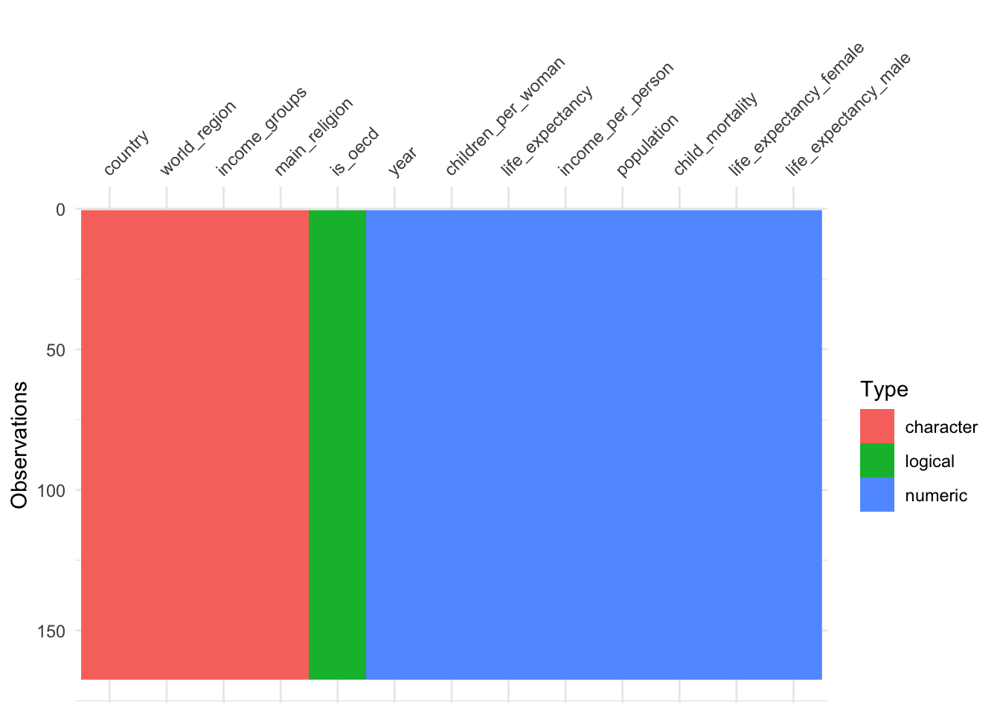
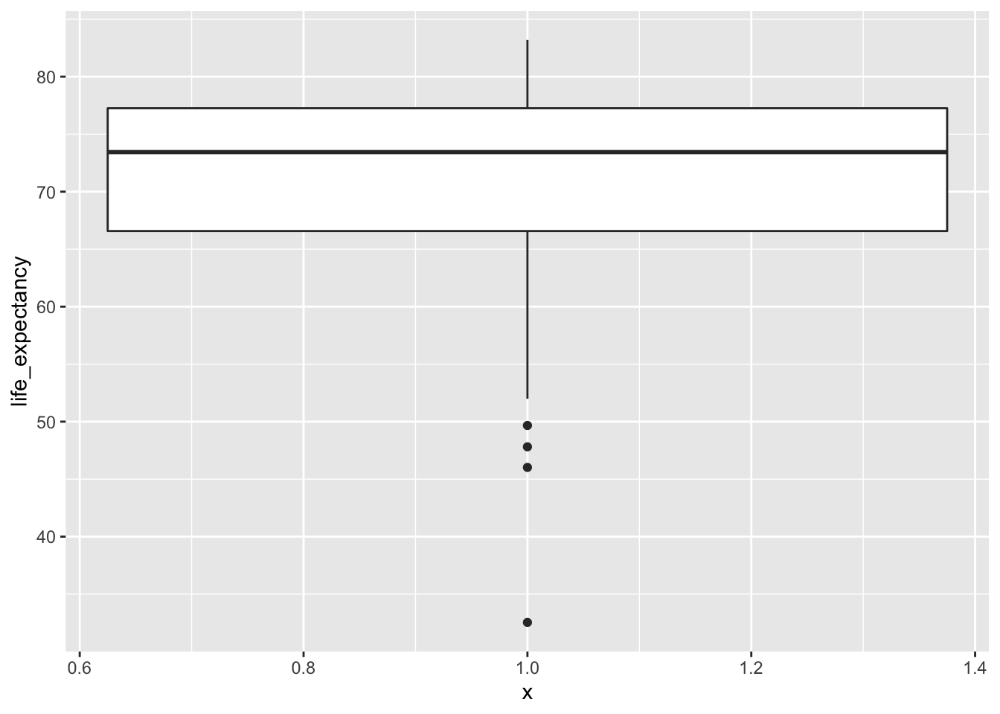
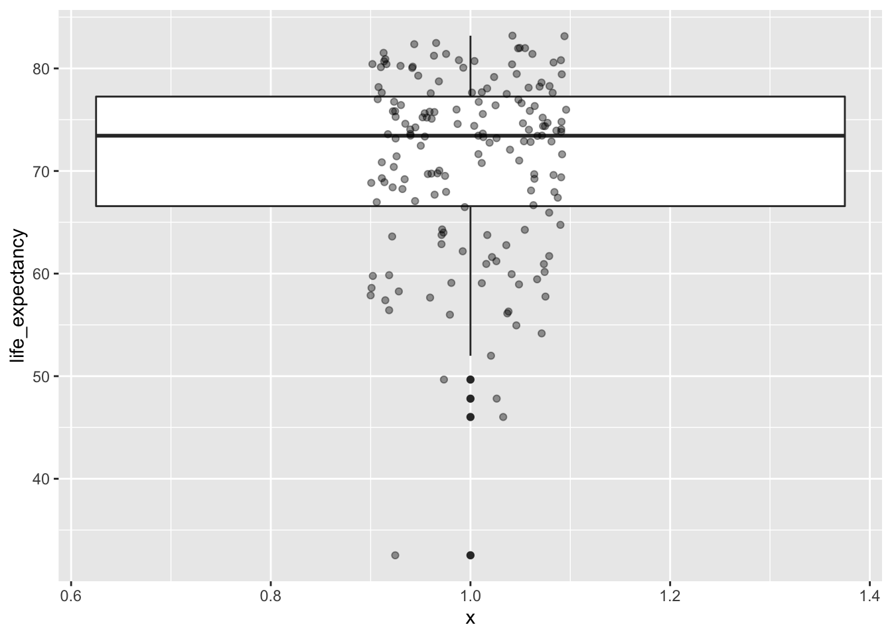
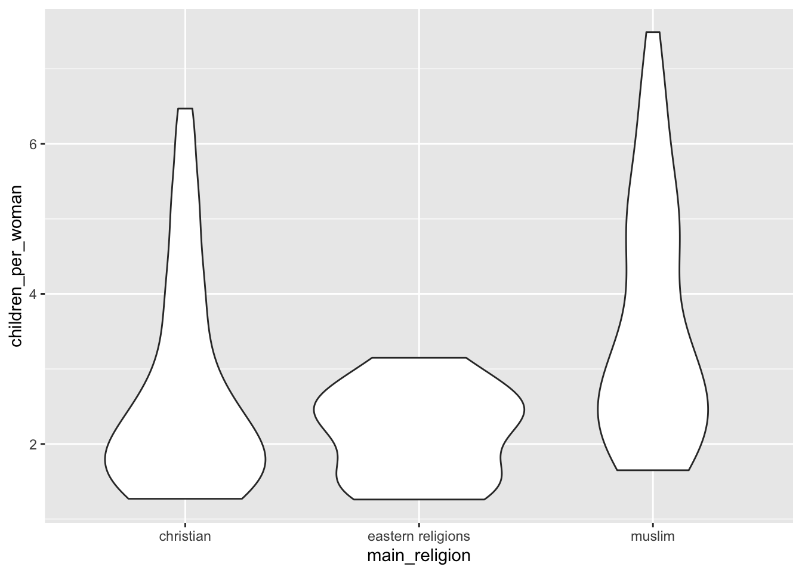
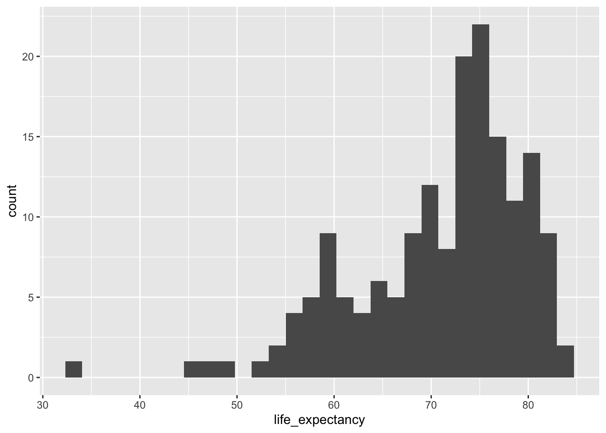
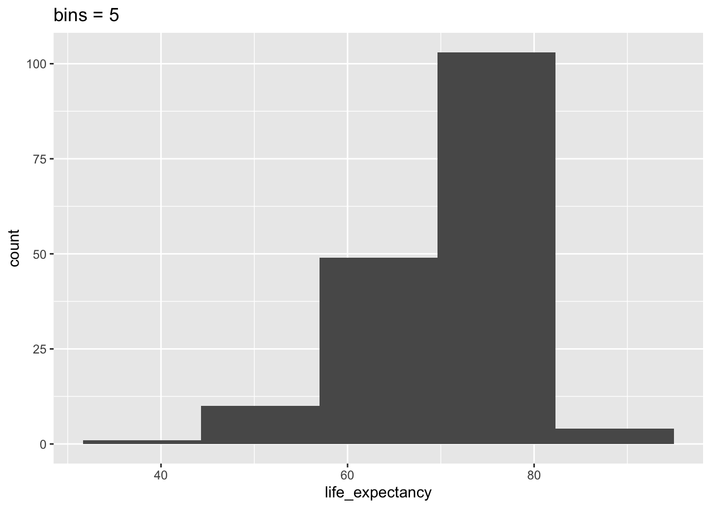
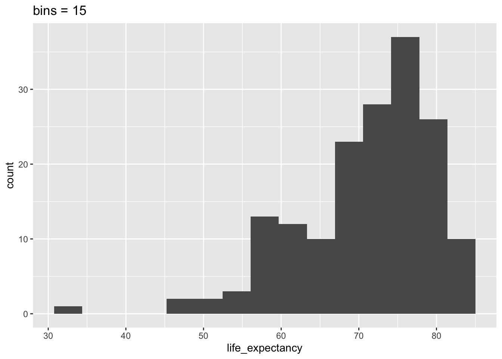

Data distributions
- Understand why we explore data distributions
- Be able to visualise the structure of data
- Use gained insight to explore further questions
Libraries and functions
Libraries
library(tidyverse)
library(visdat)Functions
Libraries
Functions
Purpose and aim
Sometimes we’re dealing with large data sets, other times they might be small. Either way, gaining insight in how your data are distributed across the different variables will help you understand your data better. This is important, since it will affect how and which conclusions you may draw from your data at a later stage. In our case we’re using the gapminder data set. This data set has 13 different variables, with observations for over 150 different countries in the year 2010.
A good starting point of any analysis/exploration is to get a general sense of the data structure. Let’s look into how we can do this.
Loading data
If you haven’t done so yet, please load the data as follows:
gapminder <- read_csv("data/gapminder_clean.csv")Data structure
There are different ways to gain insight into the structure of your data. You can do this numerically or visually.
In R we can use a package called visdat to visualise the structure of our data. If you haven’t installed it yet, please run the following code in the console:
install.packages("visdat")We can then visualise our data structure with the vis_dat() function:
vis_dat(gapminder)
Looking at the y-axis, we can see that there are over 150 observations in this data set. The data are organised and coloured by type, with the column names (our variables) at the top.
From this we can see that we have several character or text variables (e.g. country, world_region). There are also several numerical variables, such as year and children_per_woman.
There is one variable which contains logical data (TRUE/FALSE), called is_oecd.
There is a wealth of data there! So where do we go from here? In this case we’re going to use one of the variables as an example. We’ll use life_expectancy to illustrate how you can get more insight into how certain parts of your data are distributed.
Box plots
An easy way to get a sense of the data distribution is to create a box plot. For the life_expectancy variable we can do this as follows:
ggplot(data = gapminder,
aes(x = 1,
y = life_expectancy)) +
geom_boxplot()
Since we are plotting only one variable, we’re defining the x value as 1, but it doesn’t actually have any numerical meaning.
Box plots give you some summary statistics, so therefore it’s often useful to plot them together with the actual data. We can do this quite easily by adding another layer to the plot that contains the data points. We’re also adding some transparency (alpha = 0.4 - which is 40% opacity) so we can still see the box plots themselves. We’re also defining the width = 0.1 so that the data points are not spread out over the entire width of the box plot, but are constrained a bit more.
ggplot(data = gapminder,
aes(x = 1,
y = life_expectancy)) +
geom_boxplot() +
geom_jitter(alpha = 0.4, width = 0.1)
Exercises
Violin plots
Violin plots are similar to box plots, but they give extra information on the distribution of the data. This can be particularly useful if your data is multi-modal, as in, it has more than one peak.
This can happen if your data splits into two or more discernible groups.
Let’s say we wanted to look at the number of children women get, across the different religions.
We can use geom_violin() to create a violin plot in ggplot2:
ggplot(data = gapminder,
aes(x = main_religion,
y = children_per_woman)) +
geom_violin()
We can see that in Christian countries having just under 2 children (on average!) is most common. We can see this because the violin is ‘fattest’ just below 2. However, there is quite a range, with some countries having up to 6 children on average.
Comparing across the religions shows that in Eastern religions having lots of children is very uncommon, whereas in Muslim countries this does occur.
Exercises
Histograms
Another way to look at how data is distributed is to create a histogram. Here we slice our data into intervals (for example, in 5 year chunks e.g. 35-40 years, 40-45 years etc) and count how many observations fall into each interval. This gives us a frequency for the number of observations into each interval group.
We can do this quite straightforwardly by using geom_histogram():
ggplot(data = gapminder,
aes(x = life_expectancy)) +
geom_histogram()`stat_bin()` using `bins = 30`. Pick better value with `binwidth`.
When you run this bit of code it gives you some information:
`stat_bin()` using `bins = 30`. Pick better value with `binwidth`.What this means is that it chopped our data into 30 chunks/intervals and done the counting based on that. This might not be what we want and we can change this by changing the bins argument or using binwidth. The difference between the two is that with, for example, bins = 10 we’re saying “chop the data into 10 equal chunks” whereas with binwidth = 10 we’re saying “chop the data into chunks of 10 years each”.
To illustrate that histograms can vary heavily depending on the bin size, look at the following plots:
ggplot(data = gapminder,
aes(x = life_expectancy)) +
geom_histogram(bins = 5) +
labs(title = "bins = 5")
ggplot(data = gapminder,
aes(x = life_expectancy)) +
geom_histogram(bins = 15) +
labs(title = "bins = 15")
This means that our interpretation can also change, depending on the number of bins we’ve specified. So we need to be aware of this when we’re using histograms!
However we slice the data, the largest number of countries with similar life expectancy seem to be in the 70-80 year range.
There is also one country where life expectancy is very low and if I’d see a plot like this I would definitely want to investigate that further!
Exercises
Key points
- Data distributions allows us to understand the structure of our data better
- Box and violin plots give us summary statistics
- Histograms displays the frequency of observations